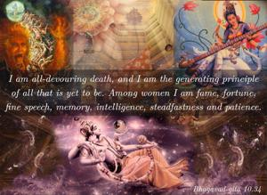
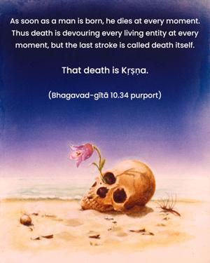
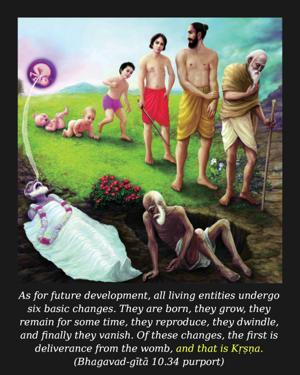
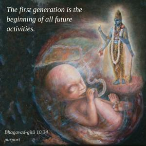
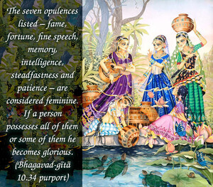

I am all-devouring death, and I am the generating principle of all that is yet to be. Among women I am fame, fortune, fine speech, memory, intelligence, steadfastness and patience.





As soon as a man is born, he dies at every moment. Thus death is devouring every living entity at every moment, but the last stroke is called death itself. That death is Kṛṣṇa. As for future development, all living entities undergo six basic changes. They are born, they grow, they remain for some time, they reproduce, they dwindle, and finally they vanish. Of these changes, the first is deliverance from the womb, and that is Kṛṣṇa. The first generation is the beginning of all future activities.
The seven opulences listed – fame, fortune, fine speech, memory, intelligence, steadfastness and patience – are considered feminine. If a person possesses all of them or some of them he becomes glorious. If a man is famous as a righteous man, that makes him glorious. Sanskrit is a perfect language and is therefore very glorious. If after studying one can remember a subject matter, he is gifted with a good memory, or smṛti. And the ability not only to read many books on different subject matters but to understand them and apply them when necessary is intelligence (medhā), another opulence. The ability to overcome unsteadiness is called firmness or steadfastness (dhṛti). And when one is fully qualified yet is humble and gentle, and when one is able to keep his balance both in sorrow and in the ecstasy of joy, he has the opulence called patience (kṣamā).